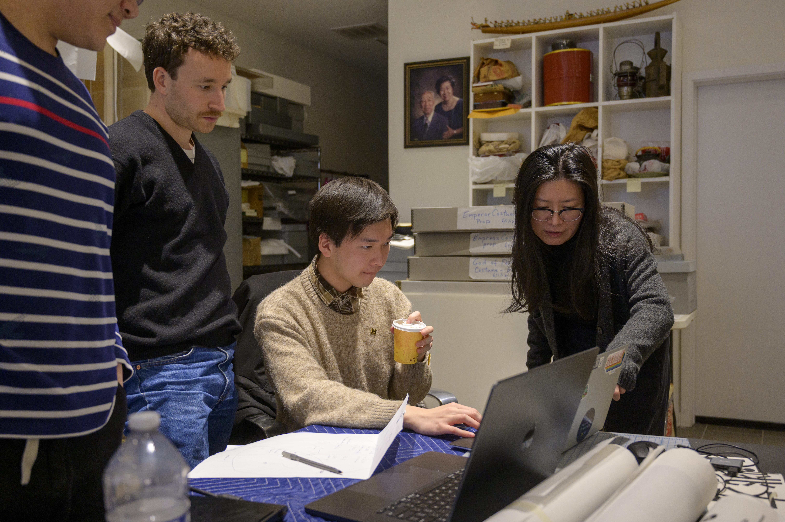
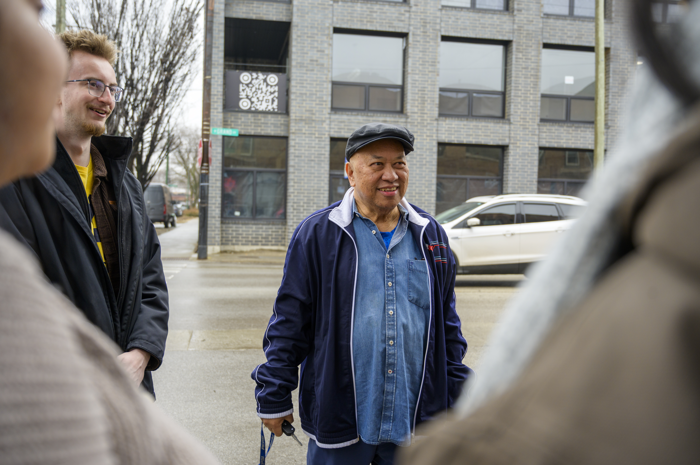
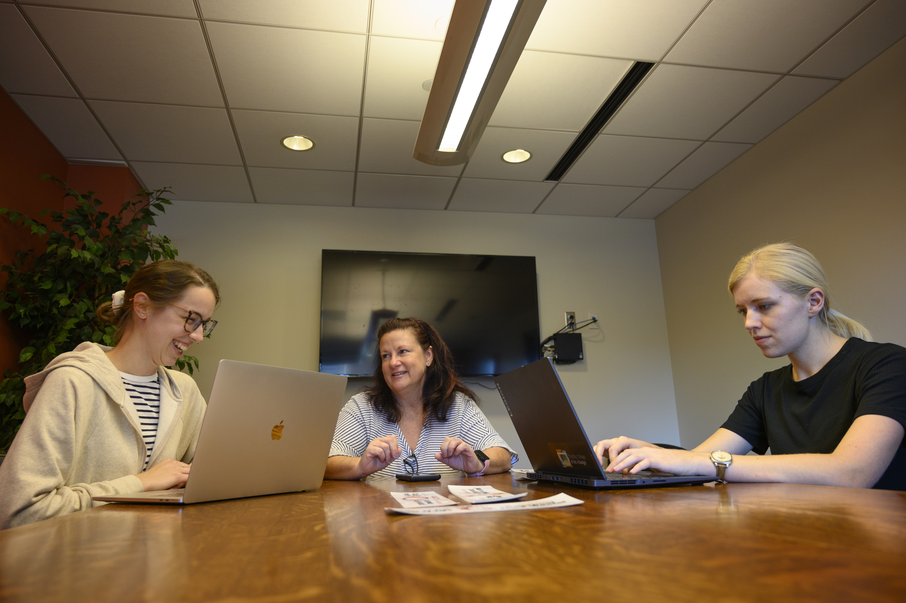

Phase 2: Starting Your Experience
Establishing professional communication, conducting initial meetings, and finalizing partnership agreements.
First Impressions
First impressions shape the trajectory of a partnership. The starting phase is where abstract project ideas turn into structured, professional commitments. By establishing clear team contracts, co-creating agendas, an aligning on project scope early, you build psychological safety within your team and trust with your client. Learning how to navigate early ambiguity is one of the most valuable professional capabilities you will gain at UMSI.
Partner Communications
Draft clear, professional outreach to launch working relationships.
There are many ways to draft a professional initial outreach email. An example of a well-written initial outreach email could follow the following guidelines:
- Greeting: This should be formal.
- Introduction: Share your name and role, as well as names of any group members you may have.
- Connection: Provide a statement on why you are contacting them.
- Schedule a Meeting: Indicate timeline and date options. Offer multiple modes of meeting.
- Closing: Thank them for their time and let them know that you are looking forward to working with them.
A helpful resource for following this outline with plug and play examples: Initial Outreach Email Template.
Arranging Your First Meeting
Once you have established initial contact with your partner, structure a productive kickoff meeting that defines roles and project boundaries.
Initial client Meeting Sample Agenda:
- Introductions: Share names, roles, and relevant background information.
- Organization and Project Introduction: Ask specific questions about the organizations, introductory questions about the projects, and, if necessary, NDAs or other privacy agreements. This is the time to clarify expected outcomes in addition to the expectations of your working relationship.
- Go Over Timelines: Further clarify the project timeline with key milestones and specific dates (if possible).
- Clarify Contacts: Clarify a primary and secondary contact for both the student and partner teams. Verify email and phone numbers.
- Communication Plan: Establish how often and through which channels you will communicate. Explain your plan for communications responses and methods.
- Final Questions and Clarifications: Address any remaining questions from you or your partner.
Resource: Initial Client Meeting Sample Agenda.

Tips for formulating Questions
Consider both an individual and community perspectives. Use this helpful document to guide your question development. Focus on the categories it lists, including (but not limited to): goals, objectives, design, products, and feedback.
Formalizing Agreements
Document team commitments and scope agreements shared by all stakeholders. This is the time to solidify the terms of your partnership and ensure everyone is aligned on expectations.
An appropriate agreement should outline the purpose, goals, roles, responsibilities, communications, and both an Introduction and Term & Amendment sections.
Here is a helpful sample agreement template to get you started.
More resources for Solidifying a Productive Partnership:
Navigating your Active Project
Master the art of adaptive project management, human-centered fieldwork, and constructive feedback as you execute your project in real time.

The Value of Navigating Frictions & Active Execution
The middle of an engaged learning project is where real growth happens—and where real challenges surface. Real-world projects rarely follow a straight line. Requirements shift, team dynamics evolve, clients face unexpected internal constraints, and research data yields surprising results.
The true value of this phase lies in developing resilience, adaptability, and ethical agility. Learning to manage "scope creep," navigate mid-project feedback, and re-align technical decisions with human needs are the exact experiences that distinguish top UMSI graduates. When you view friction not as a barrier, but as a natural part of the applied learning process, you develop the strategic problem-solving skills needed in modern information careers.

Phase 3: Managing & Executing in the Field
Conducting research, tracking progress, and maintaining clear communication with project sponsors.
Fieldwork & Research Methods
Apply human-centered design tools to observe contexts and extract insights. Use qualitative and quantitative methods to gather data, analyze findings, and inform project decisions.
Observation and Need finding: The AEIOU Method for Observations
The AEIOU method is a structured, foundational approach to categorizing field observations in human-centered design used by the Henry Ford Learning Institute. The letters stand for:
- Ativities: What activities are happening and why? What processes are involved?
- Environment: The physical/ digital context in which activities happen. Decribe it- what does it look like? Sound like? Feel like? Is the environment impacting the situation?
- Iinteractions: How people interact with each other? Are there any patterns or subtle dynamics?
- Oobjects: How are people interacting with objects that are part of the environment? Are the objects influecing the situaiton, or perhaps helping a person achieve their goals
- Uusers: Who are the users? What are their roles? What are their motivations, moods, behaviors?
AEIOU provides a framework of what types of questions to ask during the observational phase. The most important thing about a framework is that it is just that- a frame. It is a template to follow and fill in. The above questions are some examples, but it is crucial to specify your questions to the specific environment you are working within.
Sponsor & Client Updates
Maintain transparency with regular progress reporting. Schedule check-ins, provide status updates, and document decisions to ensure alignment with project goals and expectations. You can refer back to your starting meeting and emails guides for reference on how to formulate a professional email to your partner.
Feedback Loops
Gather, evaluate, and integrate constructive feedback mid-project. Use feedback to refine approaches, improve deliverables, and enhance team collaboration. Embrace feedback as a tool for continuous learning and improvement.
